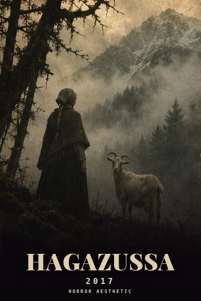

ХагаццуссаHagazussa (2017)
Режиссёр: Лукас Фельдигель · Фольклорный хоррор, ВедьмыDirector: Lukas Feigelfeld · Folk horror, Witches
⚠ Тяжёлые сценыDisturbing scenes
В Альпах XV века женщину считают ведьмой, и одиночество делает своё дело.In the fifteenth-century Alps a woman is branded a witch, and isolation does the rest.
Альбрун живёт в горной хижине с дочерью и козами. Деревня давно считает её ведьмой, потому что так когда-то считали её мать. Фильм следит, как слух превращается в судьбу.
Фельдигель снимает почти без слов: туман, снег, молоко, шерсть, горный свет. Страшное приходит медленно, и дело не в монстре, а в том, что мы перестаём отличать явь от болезненного воображения героини.
Саундтрек из низких гулов и шорохов важен не меньше картинки. Он делает сцены осязаемыми и мешает отвернуться, даже когда хочется.
Это дебют, и он требует терпения. Тем, кто любит «Ведьму» и «Мидсоммар», стоит попробовать, остальным лучше знать: действие тут тихое и тяжёлое.
Albrun lives in a mountain hut with her daughter and her goats. The village has long thought her a witch, because it once thought the same of her mother. The film watches how rumour becomes fate.
Feigelfeld shoots almost without words: fog, snow, milk, wool, mountain light. The dread comes slowly, and it is not about a monster but about how we stop telling reality from the heroine's sick imagination.
The soundtrack of low drones and rustles matters as much as the image. It makes the scenes tangible and prevents you from looking away even when you want to.
It is a debut and it demands patience. Fans of The Witch and Midsommar should try it, but be warned: the action is quiet and heavy.